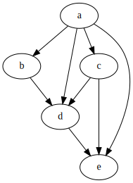
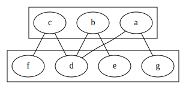

Graphs Types
Sparse graphs vs dense graphs
- Given graphs with \(n\) vertex, maximum amount of edges it can have is \(n(n-1)/2\).
- Compared to that number if the vertex present are very less it is called a sparse graph, otherwise it is a dense graph.
Based on edge orientation (directed/undirected)
Undirected graph
In undirected graph the edge for a node \(a\) to \(b\) is considered same as node from \(b\) to \(a\).
Example
flowchart LR
A --- B
A --- C
B --- C
B --- D
C --- E
D --- E- vertex \(V\) - \(\{a, b, c, d, e\}\)
- edges \(E\) - \(\{(a, b), (a, c), (b, d), (d, e)\}\)
Here in \((a, b)\) - \(a\), \(b\) are the endpoints of the edge.
- Order of graph = no of vertices \(|V|\)
- Size of graph = no of edges \(|E|\) or for computational complexity \(|E|+|V|\)
Directed Graph
Also called digraph or directed simple graph.
Example
flowchart LR
A ---> B
A ---> C
B ---> D
D ---> A
C ---> E
D ---> E\(G = (V, E)\)
- \(V\) is set of vertices
- \(E\) is subset of \(\{(x, y) | (x, y) \in V \times V \text{and } x \ne y\}\)
Multigraph
Generalization that allows multiple edges to have the same pair of endpoints.
Weighted graph and Unweighted Graph
Unweighted graph does not have any score associate with edges.
Weighted graph have a score associated with each edge.
For example in case of a map the distance between two locations. We can add to any type of graph and it will be considered weighted graph. So we can have weighted directed graph, weighted undirected graph and so on.
Directed acyclic graph (DAG)
DAG is a directed graph with no directed cycles. That is, it consists of vertices and edges (also called arcs), with each edge directed from one vertex to another, such that following those directions will never form a closed loop.

Regular graph
A regular graph is a graph in which each vertex has the same number of neighbors, i.e., every vertex has the same degree.
Complete graph
A complete graph is a graph in which each pair of vertices is joined by an edge. A complete graph contains all possible edges.
Total no of edges = \(n (n-1) / 2\)
Connected graph
For undirected graphs
In an undirected graph, an unordered pair of vertices \((x, y)\) is called connected
if a path leads from \(x\) to \(y\). Otherwise, the unordered pair is called disconnected.
A connected graph is an undirected graph in which every unordered pair of vertices in the graph is connected. Otherwise, it is called a disconnected graph.
For directed graphs
In a directed graph, an ordered pair of vertices \((x, y)\) is called
- strongly connected if a directed path leads from \(x\) to \(y\)
- weakly connected if an undirected path leads from \(x\) to \(y\) after replacing all of its directed edges with undirected edges
- otherwise, the ordered pair is called disconnected
A strongly connected graph is a directed graph in which every ordered pair of vertices in the graph is strongly connected.
Otherwise, it is called a weakly connected graph if every ordered pair of vertices in the graph is weakly connected. Otherwise it is called a disconnected graph.
A k-vertex-connected graph or k-edge-connected graph is a graph in which no set of \(k - 1\) vertices (respectively, edges) exists that, when removed, disconnects the graph. A k-vertex-connected graph is often called simply a k-connected graph.
Bipartite graph
A bipartite graph is a simple graph in which the vertex set can be partitioned into two sets, \(W\) and \(X\), so that no two vertices in \(W\) share a common edge and no two vertices in \(X\) share a common edge. Alternatively, it is a graph with a chromatic number of 2.

Planar graph
A planar graph is a graph whose vertices and edges can be drawn in a plane such that no two of the edges intersect.
Cycle graph
A cycle graph or circular graph of order \(n \ge 3\) is a graph in which the vertices can be listed in an order \(v_1, v_2, \cdots, v_n\) such that the edges are the \(\{v_i, v_{i+1}\}\) where \(i = 1, 2, \cdots, n - 1\), plus the edge \(\{v_n, v_1\}\). Cycle graphs can be characterized as connected graphs in which the degree of all vertices is 2. If a cycle graph occurs as a subgraph of another graph, it is a cycle or circuit in that graph.
Tree
A tree is an undirected graph in which any two vertices are connected by exactly one path, or equivalently a connected acyclic undirected graph.
A forest is an undirected graph in which any two vertices are connected by at most one path, or equivalently an acyclic undirected graph, or equivalently a disjoint union of trees.